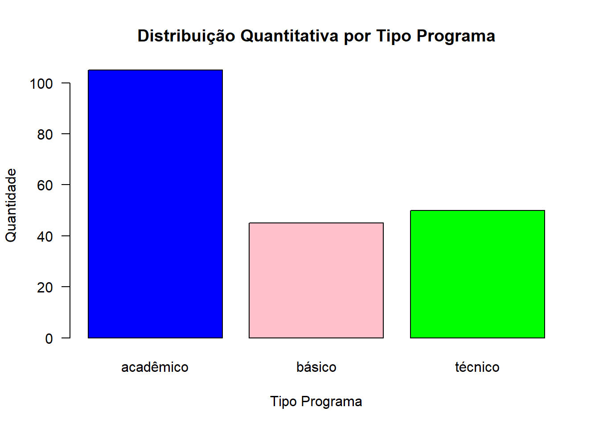
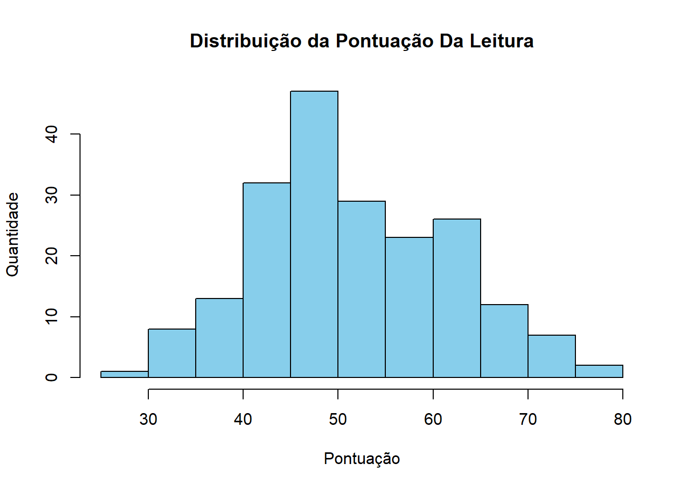
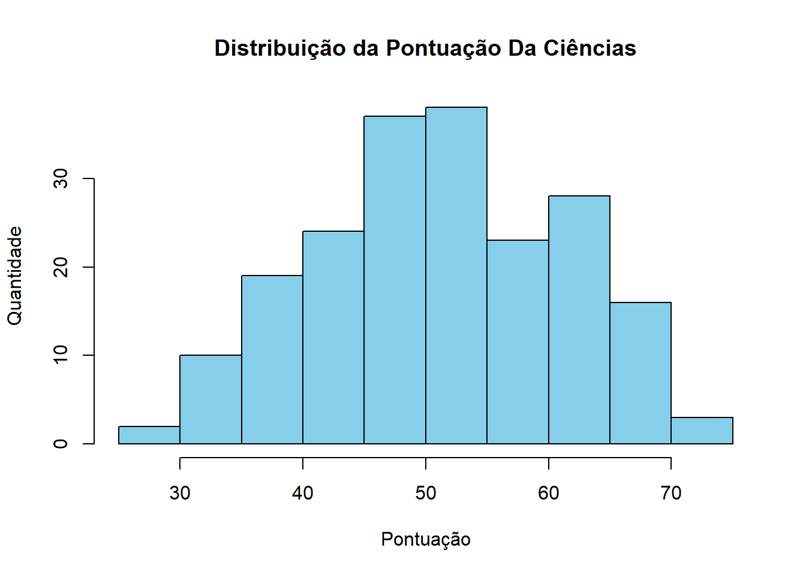
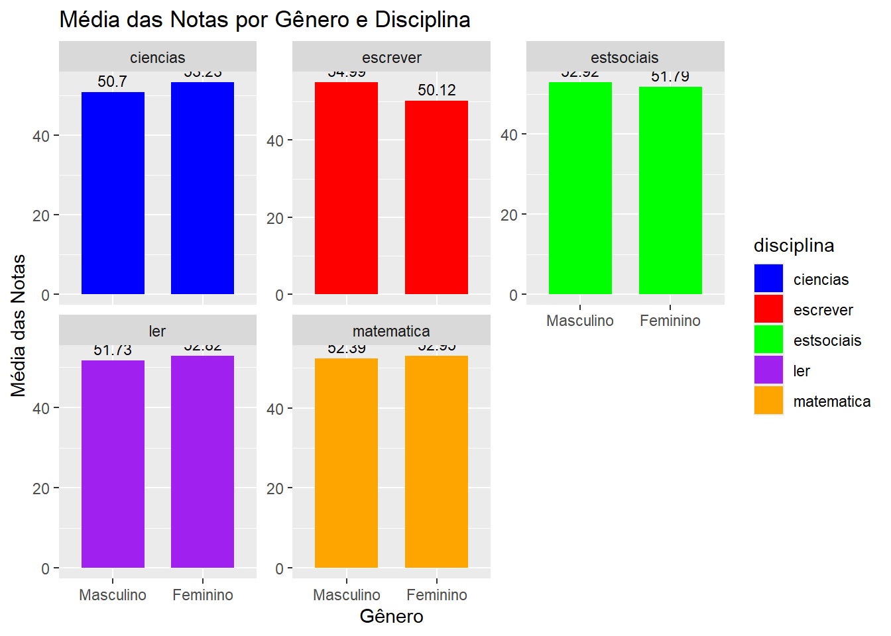

# Instalar os pacotes - versão modificada !
if(!("tidyverse") %in% installed.packages()) install.packages("tidyverse")
if(!("readr") %in% installed.packages()) install.packages("readr")
if(!("summarytools") %in% installed.packages()) install.packages("summarytools")
if(!("ggplot2") %in% installed.packages()) install.packages("ggplot2")
if(!("corrplot") %in% installed.packages())install.packages("corrplot")Um Exemplo de Análise Exploratória dos Dados
Observações que foram amostradas aleatoriamente da pesquisa High School and Beyond (2024), uma pesquisa conduzida com alunos do último ano do ensino médio pelo National Center of Education Statistics
1. Introdução ?
2. Carregamento dos Dados
Instalação dos pacotes
Carregamento dos pacotes
library(tidyverse)── Attaching core tidyverse packages ──────────────────────── tidyverse 2.0.0 ──
✔ dplyr 1.1.4 ✔ readr 2.1.5
✔ forcats 1.0.0 ✔ stringr 1.5.1
✔ ggplot2 3.5.1 ✔ tibble 3.2.1
✔ lubridate 1.9.3 ✔ tidyr 1.3.1
✔ purrr 1.0.2
── Conflicts ────────────────────────────────────────── tidyverse_conflicts() ──
✖ dplyr::filter() masks stats::filter()
✖ dplyr::lag() masks stats::lag()
ℹ Use the conflicted package (<http://conflicted.r-lib.org/>) to force all conflicts to become errorslibrary(readr)
library(summarytools)
Anexando pacote: 'summarytools'
O seguinte objeto é mascarado por 'package:tibble':
viewlibrary(ggplot2)
library(corrplot)corrplot 0.95 loaded3. Análise Exploratória de Dados com hsb2f
Neste item, realizaremos uma Análise Exploratória de Dados (AED) utilizando o dataset hsb2f localizado na pasta grupo-04/dados/.
3.1 Carregamento dos Dados
Primeiro, vamos carregar o arquivo CSV no R em uma váriavel chamada hsb2f e verificar as primeiras linhas do dataset e a estrutura dos dados.
# Carregar o dataset
hsb2f <- read.csv("../dados/hsb2f.csv", sep=";")Após o carregamento do conteúdo de nossos dados exploratórios na variável hsb2f, podemos utilizar o comando head para identificar as primeiras linhas do nosso dataset.
Por padrão o comando head traz as 6 primeiras linhas do arquivo, esse modelo é utilizado pois essa quantidade de dados é de simples leitura e validação do contúedo.
# Verificar as primeiras linhas do dataset
head(hsb2f) id genero raca clasocial tipescola programa ler escrever matematica
1 70 masculino branca baixa pública básico 57 52 41
2 121 feminino branca média pública técnico 68 59 53
3 86 masculino branca alta pública básico 44 33 54
4 141 masculino branca alta pública técnico 63 44 47
5 172 masculino branca média pública acadêmico 47 52 57
6 113 masculino branca média pública acadêmico 44 52 51
ciencias estsociais
1 47 57
2 63 61
3 58 31
4 53 56
5 53 61
6 63 61É possível também mudar a quantidade de registros conforme documentação da linguagem R, que pode ser analisada através do código
?headinicializando servidor httpd de ajuda ... concluídoAbaixo um exemplo da utilização do carregamento do conteúdo de nossos dados exploratórios com mais linhas do que as representadas no exemplo anterior;
# Imprime as 4 primeiras linhas
head(hsb2f, n = 4) id genero raca clasocial tipescola programa ler escrever matematica
1 70 masculino branca baixa pública básico 57 52 41
2 121 feminino branca média pública técnico 68 59 53
3 86 masculino branca alta pública básico 44 33 54
4 141 masculino branca alta pública técnico 63 44 47
ciencias estsociais
1 47 57
2 63 61
3 58 31
4 53 56Já o comando str nos demonstra a leitura do arquivo, mas de forma compactada, ou seja, efetuando a leitura dos dados iniciais, e nos retornando como uma única linha,
# Verificar a estrutura dos dados
str(hsb2f)'data.frame': 200 obs. of 11 variables:
$ id : int 70 121 86 141 172 113 50 11 84 48 ...
$ genero : chr "masculino" "feminino" "masculino" "masculino" ...
$ raca : chr "branca" "branca" "branca" "branca" ...
$ clasocial : chr "baixa" "média" "alta" "alta" ...
$ tipescola : chr "pública" "pública" "pública" "pública" ...
$ programa : chr "básico" "técnico" "básico" "técnico" ...
$ ler : int 57 68 44 63 47 44 50 34 63 57 ...
$ escrever : int 52 59 33 44 52 52 59 46 57 55 ...
$ matematica: int 41 53 54 47 57 51 42 45 54 52 ...
$ ciencias : int 47 63 58 53 53 63 53 39 58 50 ...
$ estsociais: int 57 61 31 56 61 61 61 36 51 51 ...3.2 Limpeza dos Dados.
Em seguida, vamos verificar e tratar valores ausentes, checar inconsistências e tipos de dados.
3.2.1 Validação de valores ausentes
Podemos definir valores ausaentes, valores que não possuem valores em nossa amostra de dados, imaginando um data.frame 2x5, conforme demonstrado abaixo:
data.frame(
id = c(1, 2, 3, 4, NA),
score = c(90, 85, NA, 92, 95)
)É possível analisar que NA seriam valores nulos, em um arquivo CSV, ODS ou XLS poderiam ser simplesmente células em branco, ou sem valores.
Desta forma, utilizaremos a entrada sum que contará a quantidade de valores nulos em nossa amostra. Este valores são identificados através da função is.na, que retornará TRUE para cada “célula” nula identificada.
# Verificar valores ausentes
sum(is.na(hsb2f))[1] 0Caso necessário podemos utilizar o comando na.omit para a remoção de linhas com valores nulos
# Tratar valores ausentes (exemplo: remover linhas com NA)
hsb2f <- na.omit(hsb2f)Por fim, o comando summary que por padrão sumariza todas as “colunas” existentes em nossa amostra, facilitando a validação dos dados existentes em nossa amostra e a identificação dos dados inconsistentes. Podemos dizer que dados inconsistentes são dados que não são reconhecidos pelo compilador R, por possuirem caracatres especiais.
# Checar inconsistências e tipos de dados
summary(hsb2f) id genero raca clasocial
Min. : 1.00 Length:200 Length:200 Length:200
1st Qu.: 50.75 Class :character Class :character Class :character
Median :100.50 Mode :character Mode :character Mode :character
Mean :100.50
3rd Qu.:150.25
Max. :200.00
tipescola programa ler escrever
Length:200 Length:200 Min. :28.00 Min. :31.00
Class :character Class :character 1st Qu.:44.00 1st Qu.:45.75
Mode :character Mode :character Median :50.00 Median :54.00
Mean :52.23 Mean :52.77
3rd Qu.:60.00 3rd Qu.:60.00
Max. :76.00 Max. :67.00
matematica ciencias estsociais
Min. :33.00 Min. :26.00 Min. :26.00
1st Qu.:45.00 1st Qu.:44.00 1st Qu.:46.00
Median :52.00 Median :53.00 Median :52.00
Mean :52.65 Mean :51.85 Mean :52.41
3rd Qu.:59.00 3rd Qu.:58.00 3rd Qu.:61.00
Max. :75.00 Max. :74.00 Max. :71.00 3.3 Análise Descritiva
Agora, vamos realizar uma análise descritiva detalhada para nos familiarizarmos com os dados, organizá-los e sintetizá-los.
Utilizando o comando table podemos contar as amostras separadas pelas variações existentes nos dados.
# Contagem de frequências para a variável genero
table(hsb2f$genero)
feminino masculino
109 91 O comando hist no possibilita efetuar a leitura dos dados númericos existentes para uma “coluna” de nossa amostra. A seguir é demonstrada a leitura da frequência dos dados referentes a pontuação de leitura de nossos dados.
# Visualização da distribuição das variáveis
hist(hsb2f$ler, main="Distribuição da Pontuação de Leitura", xlab="Pontuação de Leitura", ylab="Frequência")3.3.1 Análise descritiva da variável gênero
# Contar as ocorrências de cada valor na coluna 'genero'
gender_counts <- table(hsb2f$genero)
# Criar o gráfico de barras
barplot(
gender_counts,
col = c("blue", "pink"),
main = "Distribuição Quantitativa por Gênero",
xlab = "Gênero",
ylab = "Quantidade",
las = 1
)3.3.2 Análise descritiva da variável raça
# Contar as ocorrências de cada valor na coluna 'raca'
contagem_valores_unicos <- table(hsb2f$raca)
print(contagem_valores_unicos)
afro-americana asiática branca hispânica
20 11 145 24 # Criar o gráfico de barras
barplot(
contagem_valores_unicos,
col = c("blue", "pink", "green", "red"),
main = "Distribuição Quantitativa por Raça",
xlab = "Raça",
ylab = "Quantidade",
las = 1
)3.3.4 Análise descritiva da variável tipo de escola
# Contar as ocorrências de cada valor na coluna 'tipescola'
contagem_valores_unicos <- table(hsb2f$tipescola)
print(contagem_valores_unicos)
privada pública
32 168 # Criar o gráfico de barras
barplot(
contagem_valores_unicos,
col = c("blue", "pink", "green", "red"),
main = "Distribuição Quantitativa por Tipo Escolar",
xlab = "Tipo Escolar",
ylab = "Quantidade",
las = 1
)3.3.5 Análise descritiva da variável programa escolar adotado
# Contar as ocorrências de cada valor na coluna 'programa'
contagem_valores_unicos <- table(hsb2f$programa)
print(contagem_valores_unicos)
acadêmico básico técnico
105 45 50 # Criar o gráfico de barras
barplot(
contagem_valores_unicos,
col = c("blue", "pink", "green", "red"),
main = "Distribuição Quantitativa por Tipo Programa",
xlab = "Tipo Programa",
ylab = "Quantidade",
las = 1
)
3.3.6 Análise descritiva da variável habilidade de leitura
# Criar o histograma
hist(
hsb2f$ler,
breaks = 10, # Número de intervalos (bins)
col = "skyblue", # Cor das barras
border = "black", # Cor da borda das barras
main = "Distribuição da Pontuação Da Leitura",
xlab = "Pontuação",
ylab = "Quantidade"
)
3.3.7 Análise descritiva da variável habilidade de escrita
# Criar o histograma
hist(
hsb2f$escrever,
breaks = 10, # Número de intervalos (bins)
col = "skyblue", # Cor das barras
border = "black", # Cor da borda das barras
main = "Distribuição da Pontuação Da Escrita",
xlab = "Pontuação",
ylab = "Quantidade"
)3.3.8 Análise descritiva da variável habilidade em matemática
# Criar o histograma
hist(
hsb2f$matematica,
breaks = 10, # Número de intervalos (bins)
col = "skyblue", # Cor das barras
border = "black", # Cor da borda das barras
main = "Distribuição da Pontuação da Matemática",
xlab = "Pontuação",
ylab = "Quantidade"
)3.3.9 Análise descritiva da variável habilidade em ciências
# Criar o histograma
hist(
hsb2f$ciencias,
breaks = 10, # Número de intervalos (bins)
col = "skyblue", # Cor das barras
border = "black", # Cor da borda das barras
main = "Distribuição da Pontuação Da Ciências",
xlab = "Pontuação",
ylab = "Quantidade"
)
3.3.10 Análise descritiva da variável habilidade em estudos socias
# Criar o histograma
hist(
hsb2f$estsociais,
breaks = 10, # Número de intervalos (bins)
col = "skyblue", # Cor das barras
border = "black", # Cor da borda das barras
main = "Distribuição da Pontuação Estsociais",
xlab = "Pontuação",
ylab = "Quantidade"
)3.4 Análise descritiva utilizando a comparação de médias
Testes estatísticos são métodos utilizados para tomar decisões ou inferências sobre uma população com base em uma amostra de dados. Eles permitem avaliar hipóteses e determinar a significância dos resultados obtidos em experimentos ou estudos observacionais.
Os testes de comparação de médias são utilizados para avaliar se existem diferenças significativas entre as médias de dois ou mais grupos.
Esses testes são amplamente aplicados em pesquisas científicas, onde a comparação entre grupos é frequentemente necessária para validar hipóteses.
3.4.1 Comparação das médias verificando as notas por gênero e por disciplina
# Reorganizar os dados com reshape
df_long <- reshape(hsb2f,
varying = c("estsociais", "ciencias", "matematica", "escrever", "ler"),
v.names = "nota",
timevar = "disciplina",
times = c("estsociais", "ciencias", "matematica", "escrever", "ler"),
direction = "long")
# Calcular a média das notas por gênero e disciplina
df_long_summary <- df_long %>%
group_by(genero, disciplina) %>%
summarise(media_nota = mean(nota, na.rm = TRUE), .groups = 'drop')
# Criar o gráfico de sobreposição
ggplot(df_long_summary, aes(x = factor(genero), y = media_nota, fill = disciplina, group = disciplina)) +
geom_bar(stat = "identity", position = "dodge", width = 0.7) + # Usar estatísticas de identidade (já calculadas)
geom_text(aes(label = round(media_nota, 2)),
vjust = -0.5, color = "black", size = 3) + # Adicionando os valores das médias nas barras
facet_wrap(~ disciplina, scales = "free_y") + # Facetas para cada disciplina
xlab("Gênero") +
ylab("Média das Notas") +
scale_x_discrete(labels = c("Masculino", "Feminino")) +
scale_fill_manual(values = c("blue", "red", "green", "purple", "orange")) + # Cores para cada disciplina
ggtitle("Média das Notas por Gênero e Disciplina")
3.4.2 Comparação das médias confrontando as notas por raça e disciplina
# Reorganizar os dados com reshape
df_long <- reshape(hsb2f,
varying = c("estsociais", "ciencias", "matematica", "escrever", "ler"),
v.names = "nota",
timevar = "disciplina",
times = c("estsociais", "ciencias", "matematica", "escrever", "ler"),
direction = "long")
# Calcular a média das notas por raça e disciplina
df_long_summary <- df_long %>%
group_by(raca, disciplina) %>%
summarise(media_nota = mean(nota, na.rm = TRUE), .groups = 'drop')
# Criar o gráfico de sobreposição
ggplot(df_long_summary, aes(x = factor(raca), y = media_nota, fill = disciplina, group = disciplina)) +
geom_bar(stat = "identity", position = "dodge", width = 0.7) + # Usar estatísticas de identidade (já calculadas)
geom_text(aes(label = round(media_nota, 2)),
vjust = -0.5, color = "black", size = 3) + # Adicionando os valores das médias nas barras
facet_wrap(~ disciplina, scales = "free_y") + # Facetas para cada disciplina
xlab("Raça") +
ylab("Média das Notas") +
scale_x_discrete(labels = c("Hispânica", "Asiática", "Negra", "Branca")) + # Labels com os valores reais de 'raca'
scale_fill_manual(values = c("blue", "red", "green", "purple", "orange")) + # Cores para cada disciplina
ggtitle("Média das Notas por Raça e Disciplina")
3.5 Análise de Correlação
A análise de correlação é uma técnica estatística utilizada para medir e descrever a força e a direção da relação entre duas ou mais variáveis. Essa abordagem é fundamental em análise de dados pois permite que se compreenda como as variáveis se comportam em conjunto.
Uma matriz de correlação é uma tabela que mostra os coeficientes de correlação entre várias variáveis. Cada célula na matriz mostra a correlação entre duas variáveis. A correlação é uma medida estatística que indica a extensão em que duas variáveis estão linearmente relacionadas. Os valores de correlação variam de -1 a 1:
1 indica uma correlação positiva perfeita.
-1 indica uma correlação negativa perfeita.
0 indica que não há correlação linear entre as variáveis.
O comando cor(hsb2f[, sapply(hsb2f, is.numeric)]) calcula a matriz de correlação para todas as variáveis numéricas no dataset hsb2f.
Portanto, serão realizadas análises de correlação entre as variáveis do dataset.
As linhas de código abaixp mostram um exemplo de como se pode calcular e visualizar a matriz de correlação:
# Calcular a matriz de correlação
cor_matrix <- cor(hsb2f[, sapply(hsb2f, is.numeric)])
# Visualizar a matriz de correlação
print(cor_matrix) id ler escrever matematica ciencias estsociais
id 1.0000000 0.1486203 0.1866883 0.2192337 0.3214015 0.1833052
ler 0.1486203 1.0000000 0.5967765 0.6622801 0.6301579 0.6214843
escrever 0.1866883 0.5967765 1.0000000 0.6174493 0.5704416 0.6047932
matematica 0.2192337 0.6622801 0.6174493 1.0000000 0.6307332 0.5444803
ciencias 0.3214015 0.6301579 0.5704416 0.6307332 1.0000000 0.4651060
estsociais 0.1833052 0.6214843 0.6047932 0.5444803 0.4651060 1.0000000Para visualizar a matriz de correlação de uma maneira mais gráfica, pode-se utilizar a função corrplot do pacote corrplot:
# Visualizar a matriz de correlação graficamente
corrplot(cor_matrix, method="circle")4. Conclusões Preliminares ??
Itens faltantes na Análise apresentada:
Identar corretamente o conteúdo do texo;
Apresentar uma breve introdução ao trabalho
Descrever e/ou interpretar cada gráfico descritivo apresentado;
Efetuar uma análise geral dos dados descritos/interpretados;
Conclusão.